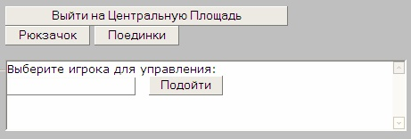
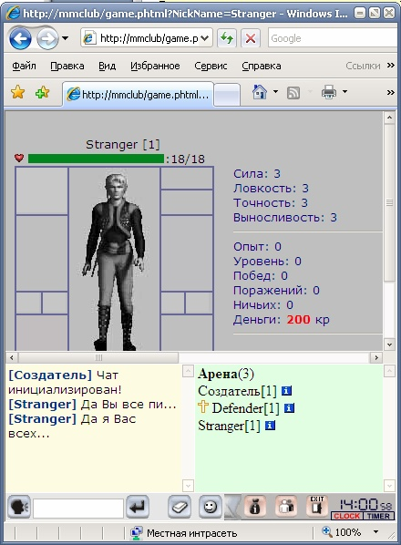
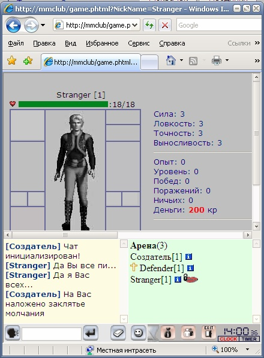
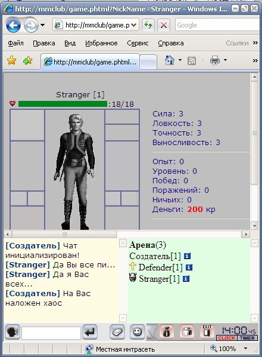
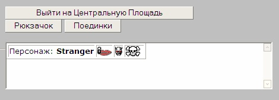
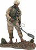
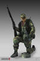
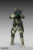
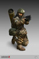
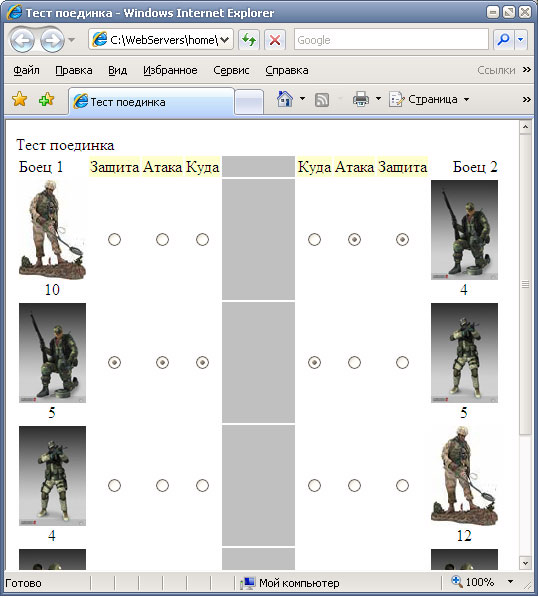

|
Курсы
Регистрация
Методика
Оглавление
Для учащихся

Статьи
Инструменты
Контакты
|
Урок
15.
Менеджмент игры
15.1.
Паладины - стражи порядка в игре.
Законы в клубе онлайновой игры абсолютны, не подвергаются
обсуждению и должны безусловно выполнятся. За их выполнением следят
специальные персонажи - паладины, которые являются
носителями закона. Паладины могут принять решения о наличии того или иного
состава преступления и применить к нарушителям какой-либо вид
наказания.
В нашем клубе Меча и магии мы также будем применять термин
Паладин как должность стража порядка.
Далеко не все игроки ведут честную игру в клубе. Многие
пытаются найти незаконные способы быстрой прокачки своего персонажа или
заработка денег нечестным образом.
Вот некоторые виды возможных нарушений
законов, которые часто случаются во всевозможных онлайновых играх
типа Бойцовский Клуб, Арена, Carnage и др.:
1. Нарушения связанные с
заведением нескольких персонажей. (если это запрещено Законами клуба)
- Регистрация нескольких персонажей одним человеком.
- Предоставление ложной информации о персонажах, заходивших с одного компьютера.
- Прокачка на "ботах", т.е. специально заведенных своих же персонажах.
2. Нарушения связанные с прокачкой
- Прокачка на других игроках за кредиты или взаимная прокачка.
- Прокачка младшего уровня старшим.
- Финансовая прокачка.
- Предложение в чате взаимной прокачки, заведомого проигрыша\выигрыша боя за
кредиты.
3. Использование ненормативной лексики при общении в чате или форуме игры
-Использование ненормативной лексики в чате.
-Использование ненормативной лексики на форуме.
-Использование ненормативной лексики в анкете.
-Использование ненормативной лексики в нике персонажа и т.д.
4. Нарушения связанные с обманом игроков.
- Обман игроков (в т.ч. мошенничество при проведении торговых, арендных и
кредитных сделок, невыполнение условий сделки, хищение чужого имущества ).
- Вымогательство/Шантаж - принуждение к совершения сделки посредством угроз
распространения сведений, позорящих потерпевшего, либо иных сведений, которые
могут причинить существенный вред правам или законным интересам потерпевшего.
5. Нарушения связанные с некорректной регистрацией
- Неверная дата рождения.
- Неверно указанный пол персонажа (пол персонажа должен соответствовать
реальному полу игрока).
- Указывание несуществующего или принадлежащего другому человеку адреса
почтового ящика.
6. Использование ошибок программного обеспечения онлайновой игры
- Взлом/похищение персонажей.
- Распространение ссылок на веб-сайты, содержание которых вызывает сбои в работе
компьютера, а равно на веб-сайты, содержание которых направлено на незаконное
получение паролей доступа к персонажам БК и т.д.
7. Прочие нарушения.
- Оскорбительные высказывания в адрес Администрации, игрока/игроков, Паладинов,
унижение их чести и достоинства, выраженное в неприличной форме.
- Пропаганда наркотиков и реклама ресурсов, содержащих данную рекламу.
Прямая и косвенная реклама собственных сайтов.
- Реклама порно-сайтов, распространение ссылок на веб-сайты, содержание которых
не относится к онлайн-игре.
- Пропаганда расизма, националистические высказывания.
- Дискриминация любого рода (по расовой, религиозной, половой принадлежности etc)
- Попрошайничество.
- Угрозы насилием и/или физической расправой в реальной жизни.
Паладины, как блюстители закона клуба, могут применять следующие наказания за
деяния, описанные выше:
1.Заклятие молчания.

2.Присваивание склонности Хаос (разного рода ограничения во время игры)
3.Блокировка персонажа.
15.2.
Наложение молчания в чате.
Итак, одним из самых простых наказаний, является наказание
наложением молчания на игрока. Давайте добавим такую возможность паладину.
Возьмем, к примеру, игрока с ником Defender
и сделаем из него паладина.
Для этого введем дополнительное поле
Char_Side в таблицу users, которое будет
описывать "склонность персонажа". Это поле будет принимать у нас
несколько значений:
0 - обычный игрок (по умолчанию)
1 - паладин
2 - игрок с темной склонностью.
Давайте поменяем склонность игроку Defender ,
т.е. установим значение поля Char_Side в
единицу. После чего немного поменяем наш файл
char.phtml для того чтоб отображать
специальный значок паладина -
. Этим значком он
сразу будет выделяться среди других обычных игроков клуба.
Теперь в char.phtml
мы еще будем считывать поле Char_Side
, чтоб для паладина отобразить его значок:
|
$aChar_Side = $aRow["Char_Side"]; |
Также напишем простую функцию
GetCharSide:
function GetCharSide(){
global $aChar_Side,$aChar_Chaos;
if ( $aChar_Side == 1 )
print ('<img src=img/pal.gif alt="Игрок
принадлежит к светлому братству"> ');
if ( $aChar_Side == 2 )
print ('<img src=img/dark.gif alt="Игрок
принадлежит к темному братству"> ');
if ( $aChar_Chaos == 1 )
print ('<img src=img/chaos.gif alt="Игрок
находится в хаосе"> ');
} |
Теперь наш персонаж
Defender обзавелся значком паладина:

Безусловно, в реальной онлайновой игре, никто никогда не назначит
игрока 1-го уровня стражем порядка. Такой игрок еще сам не знает всех правил
клуба и тем более не может следить за их выполнением! Но у нас все возможно,
поэтому давайте сделаем для паладина специальный элемент страницы, где он сможет
использовать свои способности по наведению порядка - наложению молчанки, хаоса
или блока.
Но, для начала, снова немного расширим нашу табличку
users. На этот раз добавим поля, которые отвечают
за три состояния (молчанка, хаос или блок)
/*хаос, блок, молчанка*/
Char_Chaos INT DEFAULT 0,
Char_Block INT DEFAULT 0,
Char_ShutUp INT DEFAULT 0, |
Если игрок является
паладином, у него в странице char.phtml появляется
специальный iframe для вызова паладинских функций
наведения порядка:
<?php if ($aChar_Side == 1) { ?>
<br><br>
<iframe src="pal.phtml?NickName=<?php echo
$aNickName ?>" width=450 height=80 frameborder=1 vspace=0 hspace=0
marginwidth=0 marginheight=0 scrolling=yes></iframe>
<?php } ?> |
В этом теге
iframe, грузится специальный файл
pal.phtml, в котором нам предстоит
описать алгоритмы наложения и снятия молчанок/хаоса/блока.
По умолчанию, этот файл отображает поле ввода ника персонажа, к
которому впоследствии планируется применить меры пресечения:
<?php
if ($aPlayerLogin == ""){
?>
Выберите игрока для управления: <br>
<input type=text id=user_login> <input type=button value =
'Подойти' onClick='ControlPlayer()'>
<?php
} else {......
............ |
Пока не указан логин игрока, мы
отображаем поле ввода:

Давайте применим
меры дисциплинарного взыскания к персонажу Stranger,
который имеет нехорошее свойство - использовать нецензурную лексику при общении
в чате:

Наш Паладин Defender,
увидев такое вопиющее нарушение закона тут же вводит ник нарушающего
порядок персонажа себе в управляющем фрейме и после этого у него появляется
наложить на игрока молчанку:

При вводе имени игрока в поле управления, паладин активирует функцию:
function ControlPlayer(){
pl_login = document.getElementById('user_login').value;
location.href="pal.phtml?playerlogin="+pl_login;
} |
Которая передает ник
персонажа в скрипт pal.phtml.
<?php
$aPlayerLogin = "";
if (!empty($_GET['playerlogin'])){
$aPlayerLogin = $_GET['playerlogin'];
}
?> |
Затем осуществляется проверка поля
Char_ShutUp
игрока Stranger:
...
$aChar_ShutUp = $aRow["Char_ShutUp"];
...
print ( "<table border=1><tr><td>Персонаж:
<b>$aPlayerLogin </b></td>");
if($aChar_ShutUp == 1){
print("<td> <a href='#' onClick='PalAction(1)'><img
src=img/shut_up2.gif border=0 alt='Снять молчанку'></a></td>");
}else{
print("<td> <a href='#' onClick='PalAction(2)'><img
src=img/shut_up.gif border=0 alt='Наложить молчанку'></a></td>");
} |
Нажав на значок
паладин
активирует JavaScript функцию
PalAction.
Аргумент 1 этой функции означает - снятие
молчанки, а аргумент 2 -
наложение молчанки.
function PalAction( action ){
if (confirm("Вы уверены?")){
location.href="pal.phtml?act="+action+"&playerlogin=<?php
echo $aPlayerLogin; ?>";
}
} |
Эта функция передает
скрипту pal.html параметр act,
который определяет действие производимое паладином.
На PHP это выглядит следующим образом:
if (!empty($_GET['act'])){
$aAction = $_GET['act'];
switch ($aAction) {
case 1:
$query = "update users set Char_ShutUp=0 WHERE
USER_ID='$aUserID'";
$result = mysql_query($query) or
die("Query failed : " .
mysql_error());
$query = "INSERT INTO chat (CH_MSG,USER_ID,USER_ID_TO,CH_ROOM,IS_PRIVATE)
values('С Вас снято заклятье молчания',1,'$aUserID','0',1)";
$result = mysql_query($query) or
die("Query failed : " .
mysql_error());
break;
case 2:
$query = "update users set Char_ShutUp=1 WHERE
USER_ID='$aUserID'";
$result = mysql_query($query) or
die("Query failed : " .
mysql_error());
$query = "INSERT INTO chat (CH_MSG,USER_ID,USER_ID_TO,CH_ROOM,IS_PRIVATE)
values('На Вас наложено заклятье молчания',1,'$aUserID','0',1)";
$result = mysql_query($query) or
die("Query failed : " .
mysql_error());
break; |
В результате в
браузере видим следующую картину:

15.3.
Наложение хаоса (ограничение возможностей).
Если нарушитель порядка уже неоднократно привлекался к молчанкам,
то паладин вполне резонно может нажать на кнопку
в своем меню
управления. Наложение хаоса предусматривает некоторые ограничения на свободу
перемещений наказанного персонажа. Вы можете сами придумать какие это будут
ограничения
К примеру, персонаж в хаосе не может зайти в комиссионный магазин и
торговые ряды. Это очень существенное наказание! Ведь такой игрок должен
покупать вещи только в государственном магазине (кузнице) по госценам и никаких
скидок для него не предусмотрено. Более того, он не может продать свои старые,
ненужные вещи.
Итак, выбрав столь суровое наказание, паладин нажимает на
кнопку и
выполняет ту же
JavaScript функцию
PalAction.
Но на этот раз в качестве аргумента могут быть переданы значения: 4 - для
наложения хаоса и 3 - для снятия хаоса.
...
$aChar_Chaos= $aRow["Char_Chaos"];
...
print ( "<table border=1><tr><td>Персонаж:
<b>$aPlayerLogin </b></td>");
if($aChar_Chaos == 1){
print("<td> <a href='#' onClick='PalAction(3)'><img
src=img/chaos2.gif border=0 alt='Снять хаос'></a></td>");
}else{
print("<td> <a href='#' onClick='PalAction(4)'><img
src=img/chaos.gif border=0 alt='Наложить хаос'></a></td>");
} |
Выполняясь, функция
PalAction,
вызывает выполнение следующего фрагмента
PHP кода:
case 3:
$query = "update users set Char_Chaos=0 WHERE
USER_ID='$aUserID'";
$result = mysql_query($query) or die("Query failed : " . mysql_error());
$query = "INSERT INTO chat (CH_MSG,USER_ID,USER_ID_TO,CH_ROOM,IS_PRIVATE)
values('С Вас снят хаос',1,'$aUserID','0',1)";
$result = mysql_query($query) or
die("Query failed : " .
mysql_error());
break;
case 4:
$query = "update users set Char_Chaos=1 WHERE
USER_ID='$aUserID'";
$result = mysql_query($query) or die("Query failed : " . mysql_error());
$query = "INSERT INTO chat (CH_MSG,USER_ID,USER_ID_TO,CH_ROOM,IS_PRIVATE)
values('На Вас наложен хаос',1,'$aUserID','0',1)";
$result = mysql_query($query) or
die("Query failed : " .
mysql_error());
break; |
В
результате, в окне браузера видим следующую картину:

В качестве домашнего упражнения, сделайте для помещенного в
хаос игрока ограничение на вход в "Торговые ряды" и "Комиссионный
магазин".
15.4.
Наложение блока на игрока
Если паладин находит, что игрок допустил правонарушения не
совместимые с его дальнейшим пребыванием в клубе, он может наложить на персонаж
заклятие смерти (блокировки).
Третья кнопка в панели управления паладина как раз
отвечает за это действие:

Итак, желая заблокировать персонажа, паладин нажимает на кнопку
и выполняет знакомую
нам JavaScript функцию
PalAction.
Но на этот раз в качестве аргумента могут быть переданы значения: 5 - для
наложения блокировки и 6 - для снятия блокировки.
...
$aChar_Block = $aRow["Char_Block"];
...
if($aChar_Block == 1){
print("<td> <a href='#' onClick='PalAction(5)'><img
src=img/block2.jpg border=0 alt='Снять блок'></a></td>");
}else{
print("<td> <a href='#' onClick='PalAction(6)'><img
src=img/block.jpg border=0 alt='Наложить блок'></a></td>");
} |
В процессе
своего выполнения, функция
PalAction,
вызывает выполнение следующего фрагмента
PHP кода:
case 5:
$query = "update users set Char_Block=0 WHERE
USER_ID='$aUserID'";
$result = mysql_query($query) or
die("Query failed : " .
mysql_error());
break;
case 6:
$query = "update users set Char_Block=1 WHERE
USER_ID='$aUserID'";
$result = mysql_query($query) or
die("Query failed : " .
mysql_error());
break; |
Преждевременное снятие наказания с провинившегося игрока - тоже отличный
способ заработать для администрации онлайн-игры. К примеру, в Бойцовском
клубе создан специальный коммерческий отдел, который занимается следующими
платными услугами:
-Смена пароля;
-Смена пароля на банковский счёт;
-Смена даты рождения;
-Смена e-mail;
-Смена пола персонажа;
-Смена никнейма персонажа;
-Снятие хаоса
-Снятие блокировки и т.д.
15.5.
На закуску.
Итак, мы подошли к завершению нашего курса. Надеюсь он был
для Вас интересным и познавательным. Конечно в рамках такого небольшого, сжатого
курса мы не могли рассмотреть все аспекты создания онлайновых игр. Однако, Вы
теперь знаете основные принципы и вооружившись знаниями, которые вы почерпнули
из наших занятий и основываясь на Ваших творческих идеях, создадите Вашу новую
онлайн игру, которая будет очень интересна для игроков и принесет Вам
известность и успех!
Давайте в качестве завершающего аккорда наших с Вами занятий
попробуем создать тестовую игру стратегического характера. Для нее мы не
будем создавать таблицы в СУБД MySQL и
писать PHP код. Мы просто
воспользуемся браузером и реализуем бой двух противоборствующих друг-другу
группировок солдат.
Итак, кто же будет участвовать в поединке?
Вот они - представители военных сил:

Стройбатовец |

Солдат с винтовкой |

Автоматчик |

Солдат с базукой |
Принцип боя такой же, какой мы создали в 8 уроке нашего курса, хотя с небольшими
отличиями. Отличия состоят, во-первых, в том что нам приходится контролировать 4
юнита вместо одного и атаковать столько же у соперника. Во-вторых защищать мы
можем только один тип юнитов и атаковать также одним типом.
В окне браузера это выглядит так:

Мы, как обычно для тестовых игр, играем одновременно за две стороны.
Выбираем какой тип
юнитов защитить, какой выбрать для нападения (это может быть как этот же тип так
другой) и назначить - на кого напасть.
Так на рисунке выше мы видим, что "Солдаты с Винтовками" персонажа
Боец 1 в количестве 5 человек защищены (к примеру окопались) и в то же время
участвуют в атакующих действиях на автоматчиков персонажа Боец 2. Боец
2, к примеру, не знает что атака ведется на подшефных ему автоматчиков и
защищает своих "винтовочников" и ими же атакует такой же род войск у Бойца 1.
Надо заметить, что окопавшийся отряд получает только треть повреждений,
поэтому этот раунд принесет перевес Бойцу 1. Он убьет больше бойцов противника и
понесет меньшие потери.
Рассмотрим теперь характеристики наших отрядов:
| Отряд |
Жизнь |
Урон |
| Стройбатчики |
2 |
3 |
| Винтовочники |
3 |
5 |
| Автоматчики |
5 |
8 |
| Солдаты с базукой |
5 |
12 |
Мы видим,
что каждый тип войска имеет очки жизни и наносимый урон. Наиболее слабы
стройбатчики - у них очков жизни 2, а наносят они урон - 3 (это для каждого
отдельного юнита, общий урон нужно умножать на количество бойцов в отряде)
Давайте опишем характеристики бойцов, их тип и количество на
JavaScript:
// Доступные войска
var sm = new Array("stroybat",2,3,
"rifleman",3,5,
"automan",5,8,
"bazooka",5,12,
"medic",3,1);
// Боец 1 1-тип войска, 2 - кол-во
var army1 = new Array(1,10,
2,5,
3,4,
4,1);
// Боец 2 1-тип войска, 2 - кол-во
var army2 = new Array(2,4,
3,5,
1,12,
4,1); |
Теперь когда эти параметры инициализированы, мы может отобразить наши
войска:
function ShowArmies(){
i = 0;
a_cnt = 1;
while( i < army1.length ) {
var pos = army1[i++];
var s = sm[pos*3-3];
var ahp = sm[pos*3-2];
var admg = sm[pos*3-1];
document.getElementById('i1'+a_cnt).src = 'warunits/'+s+'.jpg';
document.getElementById('i1'+a_cnt).alt = s+' Жизнь: '+ahp+' Урон: '+admg;
kvo = army1[i++];
if (kvo==0){
document.getElementById('A1'+a_cnt).disabled = true;
document.getElementById('D1'+a_cnt).disabled = true;
document.getElementById('W2'+a_cnt).disabled = true;
}
document.getElementById('kvo1'+a_cnt).innerHTML = kvo;
a_cnt++;
}
i = 0;
a_cnt = 1;
while( i < army2.length ) {
var pos = army2[i++];
var s = sm[pos*3-3];
var ahp = sm[pos*3-2];
var admg = sm[pos*3-1];
document.getElementById('i2'+a_cnt).src = 'warunits/'+s+'.jpg';
document.getElementById('i2'+a_cnt).alt = s+' Жизнь: '+ahp+' Урон: '+admg;
kvo = army2[i++];
if (kvo==0){
document.getElementById('A2'+a_cnt).disabled = true;
document.getElementById('D2'+a_cnt).disabled = true;
document.getElementById('W1'+a_cnt).disabled = true;
}
document.getElementById('kvo2'+a_cnt).innerHTML = kvo;
a_cnt++;
}
} |
Здесь мы просто движемся
по созданным ранее массивам и выбираем нужные значения.
Картинки войск находятся здесь.
Радио-кнопки для режимов "Защита"
"Атака" и "Куда", как
для первого бойца, так и для второго объединены в группы A1,
D1, W1 и A2, D2,
W2 соответственно. При выборе этих радио-кнопок
срабатывают соответствующие функции: setdefendх setattackх
и setwhereх, где
х - номер бойца 1 или 2. Эти функции
устанавливают значения переменных:
var s_attack1 = 0;
var s_attack2 = 0;
var s_defend1 = 0;
var s_defend2 = 0;
var s_where1 = 0;
var s_where2 = 0; |
Установка этих
переменных позволяет после выполнения хода (нажатия кнопки "Вперед")
подсчитать все потери для обеих сторон, исходя из урона, очков жизни и
защиты юнитов.
Подсчетом урона занимается функция SetDamage().
function SetDamage(){
// Характеристики нападающих
var unit1 = army1[ (s_attack1*2-1)-1 ];
var unit2 = army2[ (s_attack2*2-1)-1 ];
var kolvo1 = army1[ (s_attack1*2-1) ];
var kolvo2 = army2[ (s_attack2*2-1) ];
// характеристики по ком наносится удар?
var a_unit1 = army1[ (s_where2*2-1)-1 ];
var a_unit2 = army2[ (s_where1*2-1)-1 ];
var a_kolvo1 = army1[ (s_where2*2-1) ];
var a_kolvo2 = army2[ (s_where1*2-1) ];
// атака второго попала в защиту первого?
var dam_koef1 = (s_where2==s_defend1) ? 0.3 : 1
// атака первого попала в защиту второго?
var dam_koef2 = (s_where1==s_defend2) ? 0.3 : 1
var unit_name1 = sm[ unit1*3-3 ];
var unit_name2 = sm[ unit2*3-3 ];
var a_unit_name1 = sm[ a_unit1*3-3 ];
var a_unit_name2 = sm[ a_unit2*3-3 ];
var dam1 = sm[unit1*3-1];
var dam2 = sm[unit2*3-1];
var hp1 = sm[a_unit1*3-2];
var hp2 = sm[a_unit2*3-2];
var realdam1 = Math.round(getRandom(dam1-1,dam1+1)*dam_koef2);
var realdam2 = Math.round(getRandom(dam2-1,dam2+1)*dam_koef1);
if ((hp1*a_kolvo1 - realdam2*kolvo2) >=0){
alive1 = Math.round((hp1*a_kolvo1 -
realdam2*kolvo2)/hp1);
} else alive1 = 0;
if((hp2*a_kolvo2 - realdam1*kolvo1) >= 0){
alive2 = Math.round((hp2*a_kolvo2 -
realdam1*kolvo1)/hp2);
} else alive2 = 0;
// прописываем оставшихся после хода:
army1[ (s_where2*2-1) ] = alive1;
army2[ (s_where1*2-1) ] = alive2;
ShowArmies();
var hsh = new Date();
mess1 = hsh.getHours()+":"+hsh.getMinutes()+":"+hsh.getSeconds()+' <b>'+unit_name1+'</b>
(Боец1) нанес удар по <b>'+a_unit_name2+'</b> (Боец2), урон:
'+(realdam1*kolvo1)+' hp, потери составили: '+(a_kolvo2-alive2)+' ед. <br>';
mess2 = hsh.getHours()+":"+hsh.getMinutes()+":"+hsh.getSeconds()+' <b>'+unit_name2+'</b>
(Боец2) нанес удар по <b>'+a_unit_name1+'</b> (Боец1), урон:
'+(realdam2*kolvo2)+' hp, потери составили: '+(a_kolvo1-alive1)+' ед. <br>';
mess.innerHTML = mess1+mess2+mess.innerHTML;
TestAlive();
s_attack1 = 0;
s_attack2 = 0;
s_defend1 = 0;
s_defend2 = 0;
s_where1 = 0;
s_where2 = 0;
ClearRadio();
} |
Кроме подсчета урона и оставшихся
в живых солдат (alive1
и alive2 ),
эта функция ведет лог боя - кто куда нанес удар и результат атаки/защиты.
Вызываемые из нее функции
TestAlive и
ClearRadio
проверяют - остался ли кто-нибудь в распоряжении
бойцов в живых из вверенных им войск и очищают
выбранные в прошлом ходе радио-кнопки.
Смотрите полный код в файле
test_battle.html.
Коллектив Обучающего Центра желает Вам успехов
в разработке Ваших собственных браузерных игр!
|
|